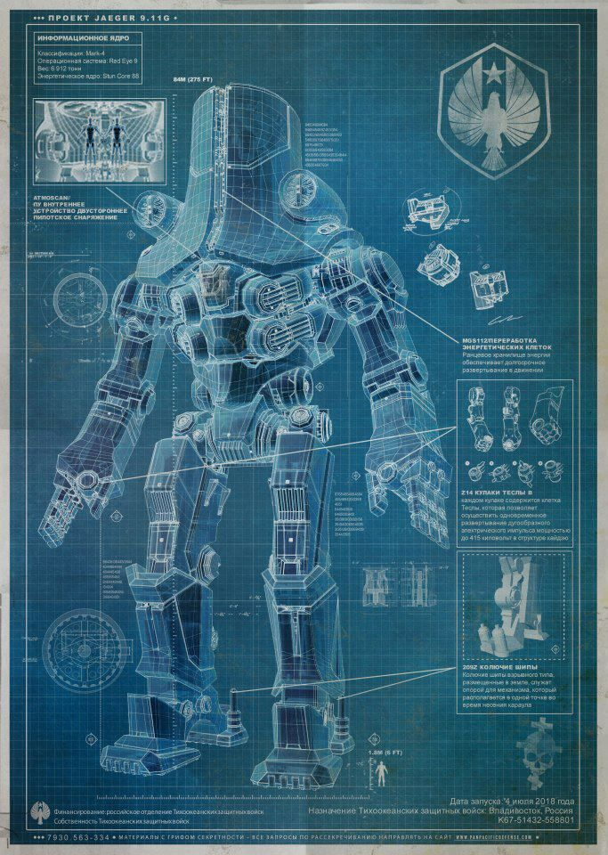
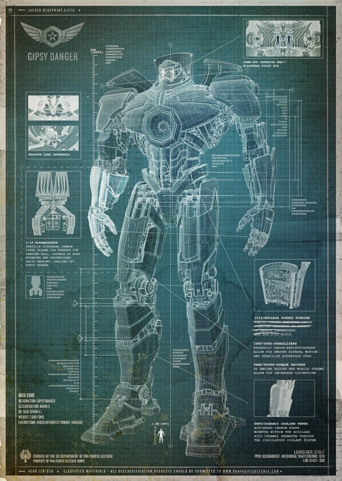
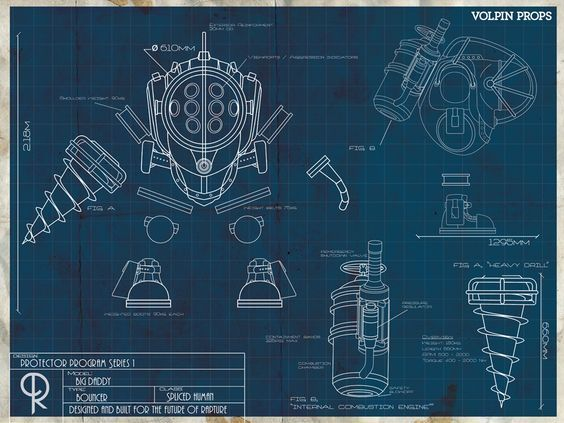
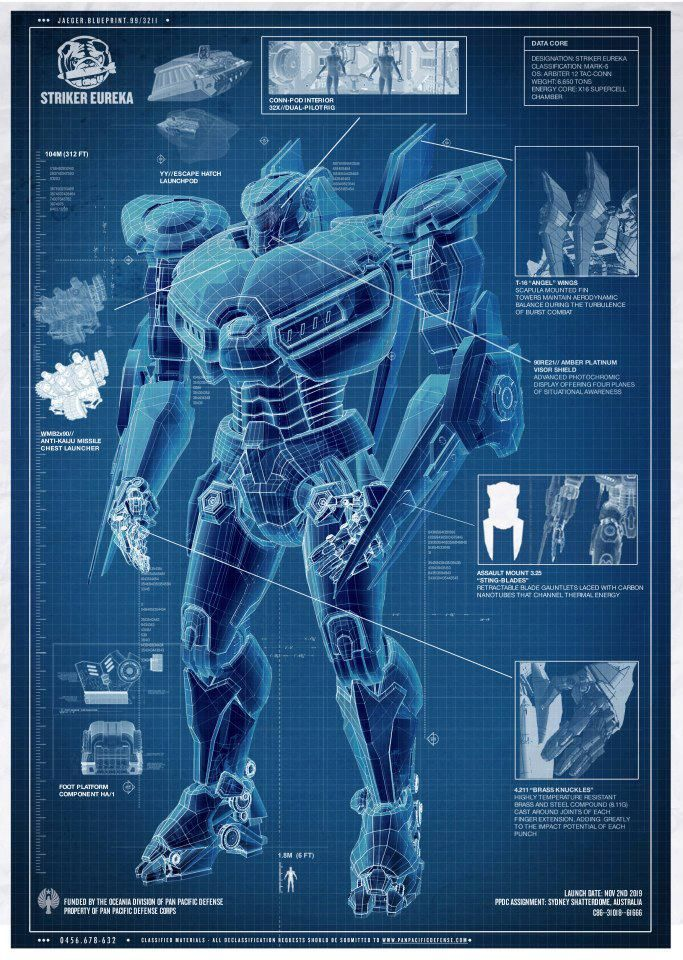
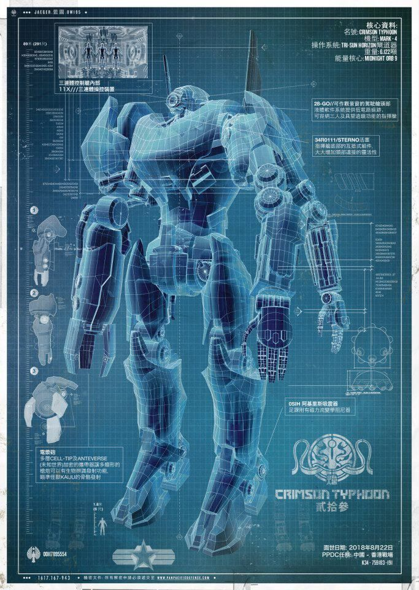
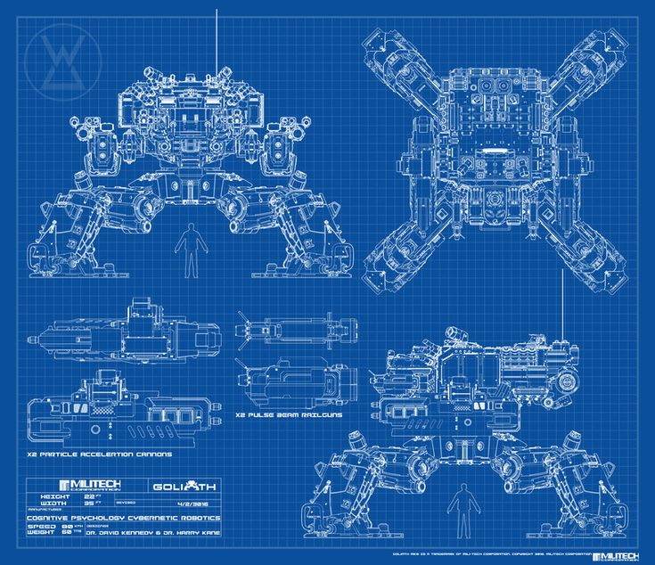
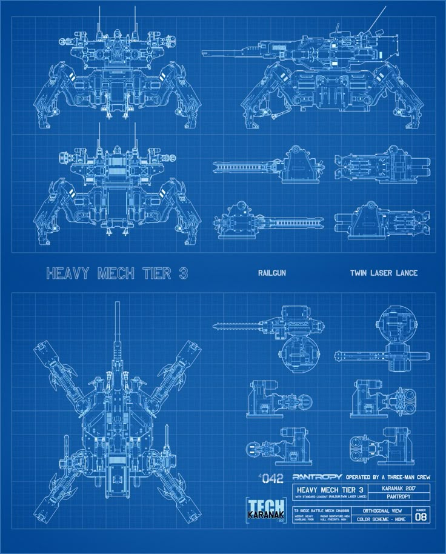
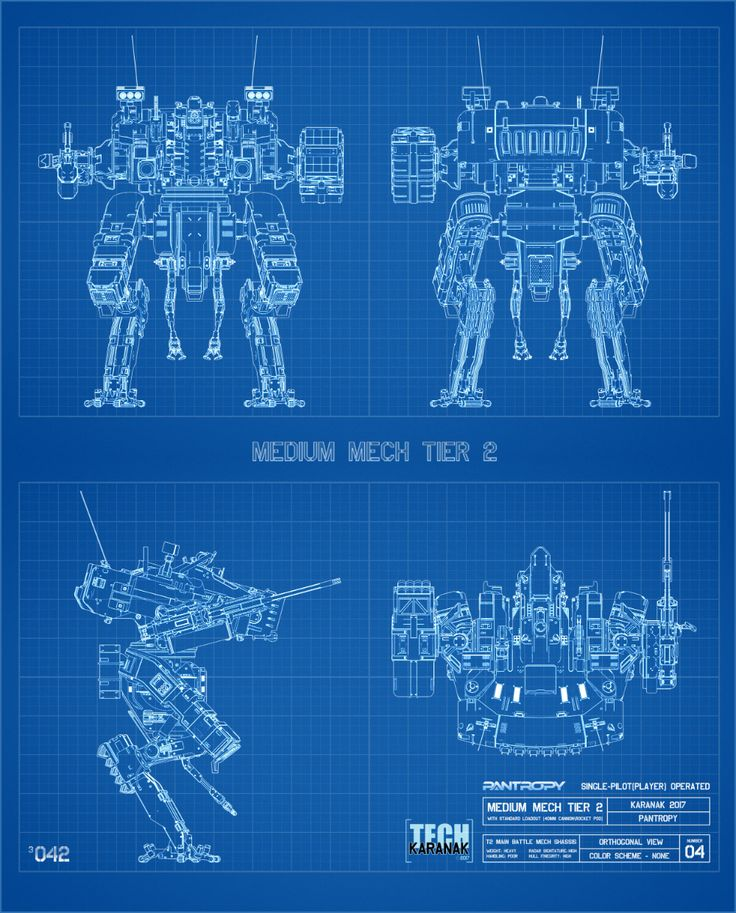

Combat Type: Heavy Assault
Description: The Iron Titan is a colossal, heavily armored titan designed for the most brutal frontline assaults. Its impressive firepower, reinforced armor plating, and heavy artillery allow it to carve through enemy lines without hesitation. Equipped with an array of devastating weapons, including energy cannons and explosive warheads, the Iron Titan is designed to withstand punishing attacks while delivering equally devastating counter-strikes. Its sheer size and power make it an unstoppable force in the chaos of battle.
Combat Type: Adaptable Assault
Description: The Phantom Striker is a highly versatile titan capable of seamlessly adapting to any battlefield situation. With its incredible agility, strength, and array of powerful weapons, the Phantom Striker can perform a variety of roles. It features a lethal arm sword for close combat, chest-mounted missiles for mid-range strikes, and a powerful arm cannon for ranged engagements. This titan's ability to rapidly change its combat tactics makes it a formidable opponent in almost any environment, from urban warfare to open battlefield confrontations.
Combat Type: Bunker Buster
Description: The Thunderclaw is a medium-tier titan designed specifically for demolishing fortifications and structures. Its primary role is to create openings in defensive walls, making it an essential asset for breaching enemy strongholds. Equipped with reinforced hydraulic claws and heavy explosives, the Thunderclaw is capable of tearing through concrete bunkers and defensive barriers with ease. Its power and precision make it the perfect tool for any assault team looking to breach enemy defenses, especially in situations where a hard push through a fortified position is necessary.
Combat Type: Autonomous Defense
Description: The Sentinel-X is a high-tech, AI-powered titan designed for defense. Operating autonomously, it uses sophisticated artificial intelligence to assess battlefield conditions and engage enemy forces with maximum efficiency. Equipped with an array of advanced weapons, including laser turrets, missile pods, and automated defense systems, the Sentinel-X is ideal for holding key positions and defending strategic locations. Its AI is constantly learning from the environment, enabling it to adapt and counter various enemy tactics in real time.
Combat Type: Tactical Assassin
Description: The Alpha Reaper is a highly specialized AI-driven assassin titan. Designed for quick, lethal strikes, it combines extreme agility with advanced targeting systems to neutralize high-value targets. Its four highly articulated arms are equipped with retractable blades, allowing it to engage enemies in close-quarter combat with unmatched precision. Additionally, the Alpha Reaper features a unique sniper scope-like eye, enhancing its ability to perform long-range strikes with pinpoint accuracy. This specialized combat setup makes it the ideal choice for covert operations and surgical eliminations.
Combat Type: Strategic Reinforcement
Description: Originally designed as a construction and support-type mecha, the Vanguard-09 has been reprogrammed for combat. This medium-tier titan has been transformed into an invaluable strategic asset, able to deploy as a makeshift turret on defensive outlines. The Vanguard-09 is equipped with heavy weaponry, including mounted artillery and automatic turrets, making it a powerful reinforcement when defending key positions. Its primary role is to provide sustained fire support during siege scenarios, ensuring that the perimeter remains secure while also keeping enemies at bay.
Combat Type: Tactical Assassin
Description: The Oblivion Mark 2 is a pinnacle of AI-driven combat engineering. It is designed for swift, decisive strikes in high-stakes environments, specializing in eliminating key targets with minimal exposure. Combining high agility, stealth capabilities, and devastating weaponry, the Oblivion Mark 2 operates as a perfect infiltration and assassin unit. It excels in environments that demand stealth and precision, making it one of the deadliest AI mechas on the battlefield.
Combat Type: Cyber Warfare
Description: Echo-23 is a unique AI mecha that specializes in cyber warfare while still being capable of combat and defense. In addition to its powerful combat frame, which can engage and defend itself in battle, Echo-23 is equipped with advanced hacking tools and electronic warfare capabilities. It can disable enemy systems, disrupt communications, and breach firewalls, all while maintaining a strong presence in combat situations. Its ability to fight and influence the battlefield both physically and digitally makes it a versatile and invaluable asset to any operation that requires both defense and cyber tactics.
